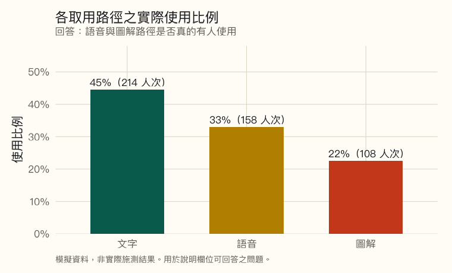
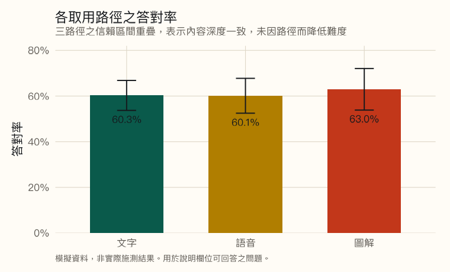
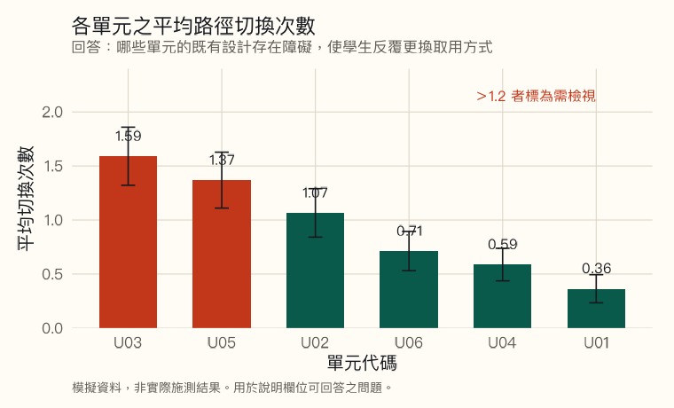
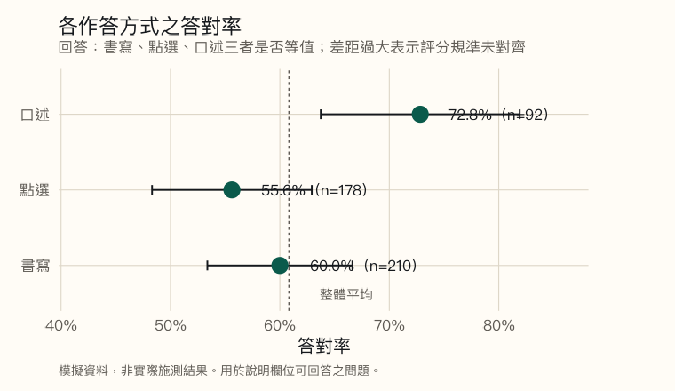

本頁為示範，資料為模擬
研習尚未辦理，故無實際施測資料。
本頁為示範，資料為模擬
研習尚未辦理，故無實際施測資料。
本頁全部圖表之資料均為模擬產生，非任何實際施測或輔導之結果，不得引用為研究發現或成效證據。模擬以固定亂數種子產生，n = 480，欄位比照資料庫頁所列之參考欄位。
本頁回答一個具體問題：依那六個欄位蒐集資料之後，究竟看得出什麼。
另有一點可供對照：圖表若未附替代文字與資料表，即不符多元表徵之要求：只看得到圖的人取得資訊，讀不到圖的人就取不到。本頁四張圖均已附上，各位建置儀表板時可依此檢視。
各取用路徑之使用比例
回答：語音與圖解路徑是否真的有人使用。
各取用路徑之使用比例
回答：語音與圖解路徑是否真的有人使用。

以表格檢視本圖資料
| 取用路徑 | 人次 | 比例 |
|---|---|---|
| 文字 | 214 | 44.6% |
| 語音 | 158 | 32.9% |
| 圖解 | 108 | 22.5% |
此為最基本的一張圖，卻是最常被略過的。未建置資料庫者，「學生會選擇適合自己的路徑」始終停留在設計假設，無從驗證。
各取用路徑之答對率
回答：多元表徵是否確實未降低內容難度。
各取用路徑之答對率
回答：多元表徵是否確實未降低內容難度。

以表格檢視本圖資料
| 取用路徑 | 人次 | 答對率 | 95% 信賴區間 |
|---|---|---|---|
| 文字 | 214 | 60.3% | 53.7% – 66.8% |
| 語音 | 158 | 60.1% | 52.5% – 67.8% |
| 圖解 | 108 | 63.0% | 53.9% – 72.1% |
這張圖的正確讀法是「沒有差異」。設計良好時三條路徑應趨於一致；出現顯著差距反而是警訊，須回頭檢查該路徑的內容是否遭簡化。
各單元之路徑切換次數
回答：哪些單元的既有設計存在障礙。
各單元之路徑切換次數
回答：哪些單元的既有設計存在障礙。

以表格檢視本圖資料
| 單元 | 人次 | 平均切換次數 | 判讀 |
|---|---|---|---|
| U03 | 83 | 1.59 | 需檢視 |
| U05 | 84 | 1.37 | 需檢視 |
| U02 | 76 | 1.07 | — |
| U06 | 80 | 0.71 | — |
| U04 | 80 | 0.59 | — |
| U01 | 77 | 0.36 | — |
此圖之價值在於指出應該去看哪裡，而非直接給出答案。切換次數高只說明該單元有問題，問題為何仍須回到現場觀察。單因子變異數分析顯示單元間差異顯著（F(5, 474) = 19.58，p < .001），此項差異確實存在於模擬資料的生成設定中。
各作答方式之答對率
這張圖是陷阱，請先看圖再讀說明。
各作答方式之答對率
這張圖是陷阱，請先看圖再讀說明。

以表格檢視本圖資料
| 作答方式 | 人次 | 答對率 | 95% 信賴區間 |
|---|---|---|---|
| 口述 | 92 | 72.8% | 63.7% – 81.9% |
| 書寫 | 210 | 60.0% | 53.4% – 66.6% |
| 點選 | 178 | 55.6% | 48.3% – 62.9% |
本頁模擬資料的生成模型中，答對機率僅取決於單元難度與取用路徑，完全未設定任何作答方式效果。上圖的差距、未重疊的信賴區間與 p = .022 的顯著結果，全部來自抽樣變異。
這是儀表板最危險的地方：資料愈多，看起來顯著的假差異就愈多。三種作答方式、六個單元、三條路徑，交叉起來有數十種比較；其中出現幾個 p < .05 是必然的。
實務上的處置方式：
- 先問這個比較是不是事前就要做的。事後翻找出來的顯著結果，證據力遠低於事前設定的檢核項目。
- 看效果量與樣本數，不只看 p 值。口述組 n = 92，僅為點選組之一半。
- 回到現場確認。若真有差異，應能在教學現場觀察到對應的現象；找不到對應現象者，多半是雜訊。
- 先檢查評分規準是否對齊。三種作答方式若確實出現穩定差距，最可能的原因是規準未等值，而非某種方式較優。
圖表本身的無障礙要求
加入圖表後，本站即須符合自身所訂之規準。
圖表本身的無障礙要求
加入圖表後，本站即須符合自身所訂之規準。
本頁四張圖均已實作下列項目，與會者建置儀表板時得逕行對照：
- 替代文字敘明結論而非圖形。撰寫「長條圖」無助於理解，應寫出數值與判讀。
- 每張圖均附可展開之資料表。螢幕報讀軟體無從讀取圖片中的數值，表格是唯一等值的取用路徑。
- 不以顏色單獨傳達訊息。第三張圖之警示色另以「需檢視」文字標註於資料表。
- 圖表底色於深淺主題下維持一致。淺底圖片置於深色背景不易辨識，故圖表容器固定為淺色底板。
- 信賴區間一律呈現。僅給點估計值會使讀者高估精確度。
圖表為原始碼產生，非截圖。以 R 之 ggplot2 繪製，資料與繪圖程式可重新執行。與會者若欲修改配色或加入自身資料，逕行更動資料來源即可。